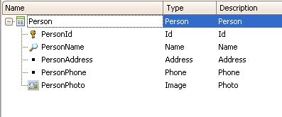
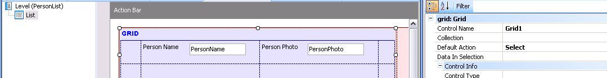

Allows the user to make a dynamic call, providing flexibility to the smart device applications. The objects to be called can be defined at design time or execution time.
SyntaxCall( {&var | ATT:att} [ {, parm} …] ) The format of the string value of &var or att is <Supported type>:<object name>[?<parameter>[{, parm} …]] Supported types
e.g:
Example1) In this example we want to redirect the user or the program flow depending on a control that we are going to do in a procedure once the user select a person from a list. What we want to control is that the selected user has all the data we want from him.  steps: Create a work with smart devices to show a list of persons and edit the default action of the grid in order to perform an action when the user select a person of the list.  Event select fo the grid // MissingData is a procedure that checks if the selected person have all the information complete and redirect the user to the next screen depending on this.Event 'Select' Composite MissingData.Call(PersonId,&object) call(&object,PersonId) EndComposite EndEventMissingData procedure code // this procedure check the person information an return a variable object that will be used in the work with smart device panel to redirect for each where PersonId = &PersonId &PersonAddress = PersonAddress &PersonName = PersonName &PersonPhone = PersonPhone &PersonPhoto = PersonPhoto endfor do case case &PersonAddress.IsEmpty() &ok = false case &PersonName.IsEmpty() &ok = false case &PersonPhone.IsEmpty() &ok = False case &PersonPhoto.IsEmpty() &ok = false otherwise &ok = true endcase if &ok = false &Object = "sd:WorkWithDevicesPerson.Person.Detail.Update" else &Object = "wbp:ViewPersonWeb" endif2) Dispatcher with fixed parameter Event 'ViewPerson' Composite &Object = GetPersonDetailLayout(PersonType) call(&Object,PersonId) EndComposite EndEvent procedure GetPersonDetailLayout Parm(in:&PersonType,out:&Object); if &PersonType = Type.Person &Object = "sd:WorkWithDevicesPerson.Person.Detail" else &Object = "sd:WorkWithDevicesDean.Dean.Detail" endif3) Dispatcher with dynamic parameter assignment Event 'ViewPerson' Composite &Object = GetPersonDetailLayout(PersonType,PersonId) call(&Object) EndComposite EndEvent procedure GetPersonDetailLayout Parm(in:&PersonType,in:&PersonId,out:&Object); if &PersonType = Type.Person &Object = "sd:WorkWithDevicesPerson.Person.Detail?"+&PersonId.ToString().Trim() else &Object = "sd:WorkWithDevicesDean.Dean.Detail?"+&PersonId.ToString().Trim()+","+&SecurityLevelId.ToString().Trim() endif From Variable to FixedNote the other ways to call an object 1) Using Link Function 2) Calling directly (ref.: Call command) ScopeObjects: Smart devices Platform: Android, iOSSee AlsoCall command
|
| Backlinks | |
| Create function | Dynamic Component Creation |
| Link Function |